Audio Morphing
On this page, you will find some cool sound effects generated by our morphing method that completely fascinated us!
These sounds were generated by morphing between two sounds and their text prompts generated by AudioLDM. Please see examples below.
These sounds were generated by morphing between two sounds and their text prompts generated by AudioLDM. Please see examples below.
- 1. Morphing between Verb-based Prompts
- Morphing from 'A baby crying' to 'A trumpet playing'
- Morphing from 'A dog howling' to 'A gong ringing'
- Morphing from 'A dog barking' to 'A cat meowing'
- Morphing from 'A trumpet playing' to 'A clarinet playing'
- 2. Morphing between Adjective-based Prompts
- Morphing from 'A creepy whisper' to 'An epic music'
- Morphing from 'An eerie sound made by a ghost' to 'A happy sound made by a piano'
If you would like to try these algorithms with your own prompts, please see our Google Colaboratory Notebooks. Let us know if you discover cool sound effects that fascinate you too!
1. Morphing between Verb-based Prompts
Each sample below morphs from a source prompt to a target prompt. The source prompt is on the left and the target prompt is on the right.
The audio samples are generated by morphing between the source and target prompts in steps of 0.25.
Example 1
Source Prompt: A baby sadly crying
Target Prompt: A trumpet happily playing
At α=0, the audio fully represents the source prompt. At α=1, the audio fully represents the target prompt. All other sounds in between are a mix of the two prompts.
At α=0, the audio sounds like a baby sadly crying. At α=1, the audio is that of a trumpet playing a happy melody. Observe the fascinating sound at α=0.5, where the baby crying morphs into trumpet
Target Prompt: A trumpet happily playing
At α=0, the audio fully represents the source prompt. At α=1, the audio fully represents the target prompt. All other sounds in between are a mix of the two prompts.
At α=0, the audio sounds like a baby sadly crying. At α=1, the audio is that of a trumpet playing a happy melody. Observe the fascinating sound at α=0.5, where the baby crying morphs into trumpet
A baby sadly crying
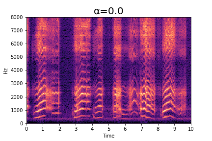
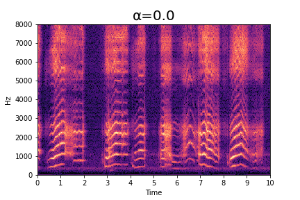
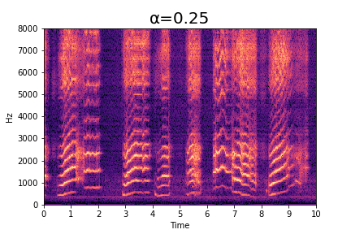
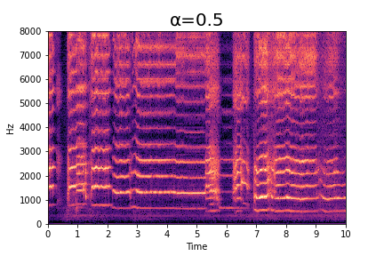

A trumpet happily playing
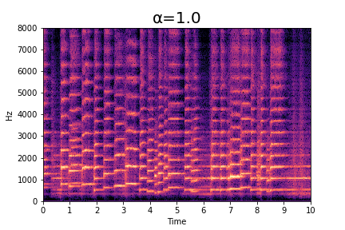
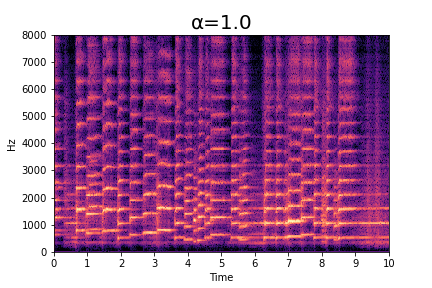
Example 2
Source Prompt: A dog howling
Target Prompt: A gong ringing
At α=0, the audio fully represents the source prompt. At α=1, the audio fully represents the target prompt. All other sounds in between are a mix of the two prompts.
At α=0, the audio sounds like a dog howling. At α=1, the audio is that of a gong ringing. Observe how the howling sound has very less harmonic components. Observe the fascinating sound at α=0.5, where the dog barks try to harmonize with the gong ringing. They also become very rhythmic. A resonant dog continuously barking/howling.
Target Prompt: A gong ringing
At α=0, the audio fully represents the source prompt. At α=1, the audio fully represents the target prompt. All other sounds in between are a mix of the two prompts.
At α=0, the audio sounds like a dog howling. At α=1, the audio is that of a gong ringing. Observe how the howling sound has very less harmonic components. Observe the fascinating sound at α=0.5, where the dog barks try to harmonize with the gong ringing. They also become very rhythmic. A resonant dog continuously barking/howling.
A dog howling
A gong ringing
Example 3
Source Prompt: A dog barking
Target Prompt: A cat meowing
At α=0, the audio fully represents the source prompt. At α=1, the audio fully represents the target prompt. All other sounds in between are a mix of the two prompts.
At α=0, the audio sounds like a baby sadly crying. At α=1, the audio is that of a trumpet playing a happy melody. Observe the fascinating sound at α=0.5, where the baby crying morphs into trumpet
Target Prompt: A cat meowing
At α=0, the audio fully represents the source prompt. At α=1, the audio fully represents the target prompt. All other sounds in between are a mix of the two prompts.
At α=0, the audio sounds like a baby sadly crying. At α=1, the audio is that of a trumpet playing a happy melody. Observe the fascinating sound at α=0.5, where the baby crying morphs into trumpet
A dog barking
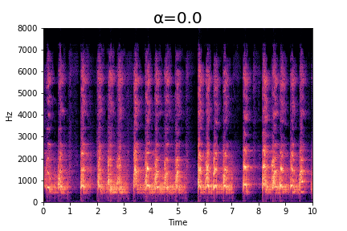
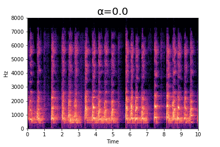

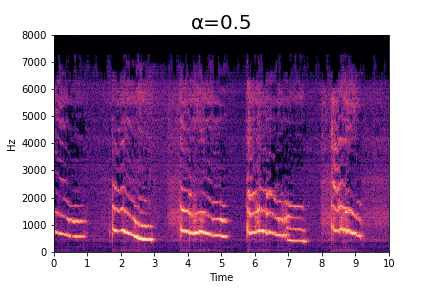

A cat meowing
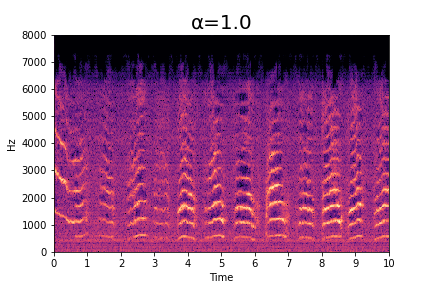
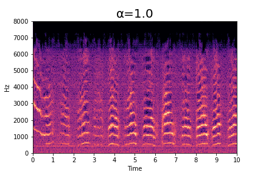
Example 4
Source Prompt: A trumpet playing
Target Prompt: A clarinet playing
At α=0, the audio fully represents the source prompt. At α=1, the audio fully represents the target prompt. All other sounds in between are a mix of the two prompts.
At α=0, you can clearly hear the sharp attack of the brass instrument. At α=0.5, you can hear the timbre of the clarinet along with the sharp attack of the trumpet.
Target Prompt: A clarinet playing
At α=0, the audio fully represents the source prompt. At α=1, the audio fully represents the target prompt. All other sounds in between are a mix of the two prompts.
At α=0, you can clearly hear the sharp attack of the brass instrument. At α=0.5, you can hear the timbre of the clarinet along with the sharp attack of the trumpet.
A trumpet playing
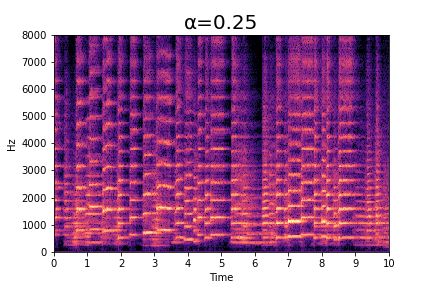
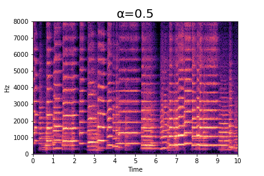

A clarinet playing
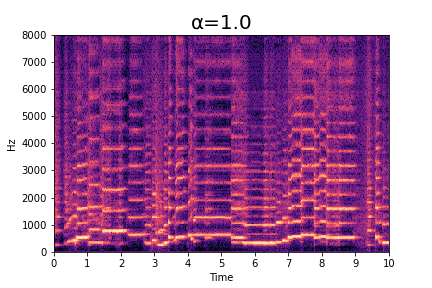
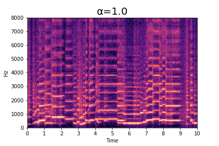
2. Morphing between Adjective-based Prompts
Each sample below morphs from a source prompt to a target prompt. The source prompt is on the left and the target prompt is on the right.
The audio samples are generated by morphing between the source and target prompts in steps of 0.25.
Example 1
Source Prompt: A creepy whisper
Target Prompt: An epic music
At α=0, the audio fully represents the source prompt. At α=1, the audio fully represents the target prompt. All other sounds in between are a mix of the two prompts.
Observe how, at α=0.25, the audio sounds like a creepy whisper with a hint of epic music. At α=0.75, although the sound is mostly music, the system tries to recreate events from the source sound in this sample.
Target Prompt: An epic music
At α=0, the audio fully represents the source prompt. At α=1, the audio fully represents the target prompt. All other sounds in between are a mix of the two prompts.
Observe how, at α=0.25, the audio sounds like a creepy whisper with a hint of epic music. At α=0.75, although the sound is mostly music, the system tries to recreate events from the source sound in this sample.
A creepy whisper
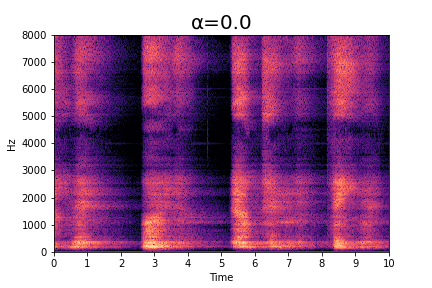
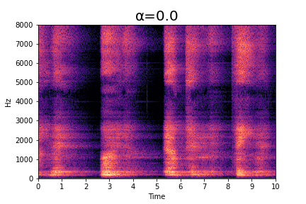
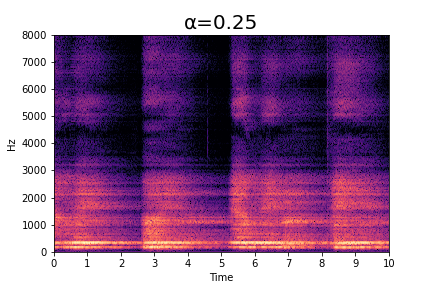
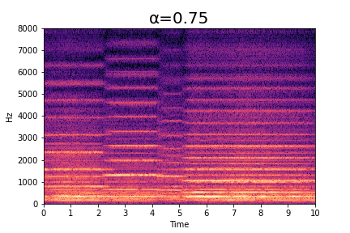
An epic music
Example 2
Source Prompt: An eerie sound made by a ghost
Target Prompt: A happy sound made by a piano
At α=0, the audio fully represents the source prompt. At α=1, the audio fully represents the target prompt. All other sounds in between are a mix of the two prompts.
At α=0, the audio sounds like the background music of a horror movie. And at α=1.0, the audio is that of a fast tempo piano playing. Observe how at α=0.25, the audio sounds less ghostly and at α=0.5 you can start hearing the piano, but recreating the ghostly sound. At α=0.75, the audio is mostly piano music.
Target Prompt: A happy sound made by a piano
At α=0, the audio fully represents the source prompt. At α=1, the audio fully represents the target prompt. All other sounds in between are a mix of the two prompts.
At α=0, the audio sounds like the background music of a horror movie. And at α=1.0, the audio is that of a fast tempo piano playing. Observe how at α=0.25, the audio sounds less ghostly and at α=0.5 you can start hearing the piano, but recreating the ghostly sound. At α=0.75, the audio is mostly piano music.
An eerie sound made by a ghost
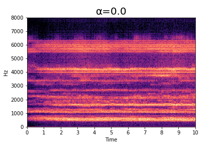
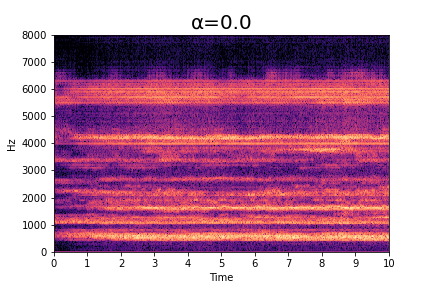
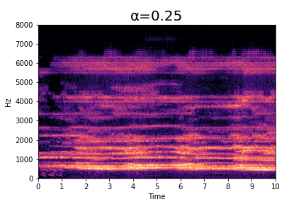
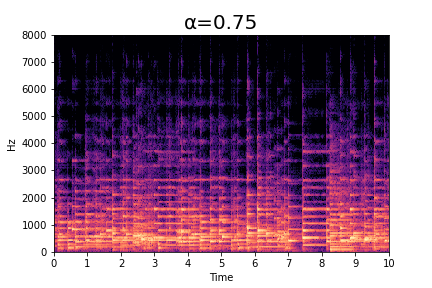
A happy sound made by a piano